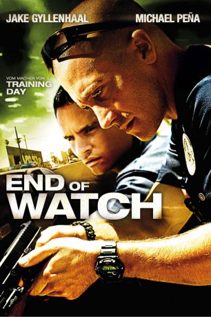
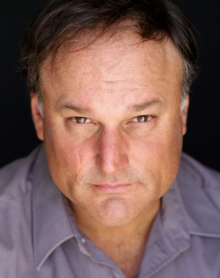

#972 End of Watch
 
 IMDB-Wertung: 7.6 / 10
IMDB-Wertung: 7.6 / 10  Metascore: 68
Metascore: 68 
Der Bezirk South Central in L.A. ist für Cops ein gefährliches Pflaster. Wer hier als Gesetzeshüter den Kampf gegen den alltäglichen Wahnsinn aus Hass und Gewalt aufnimmt, muss aus einem harten Holz geschnitzt sein. So wie Officer Brian Taylor und Officer Mike Zavala. Die beiden Polizisten sind nicht nur langjährige Kollegen, sondern auch beste Freunde. Und bei aller Härte, die der Beruf ihnen abverlangt, haben sie ihren Humor nicht verloren. Doch mit ihren unkonventionellen Methoden und unbeirrbarem Gerechtigkeitssinn stoßen die Cops nicht nur auf Widerstand bei ihren Vorgesetzten, sondern geraten auch immer mehr ins Fadenkreuz der skrupellosen Drogenmafia. Und die lockt die unbequemen Gesetzeshüter schließlich in einen Hinterhalt...
Jahr: 2012
Dauer: 109 Minuten
FSK: 16
Land: USA Studio: IITonspuren: DTS - ,
Untertitel: Englisch,
Auflösung: 1080p (1920x1040) Größe: 7188 MB
Genre: Action, Krimi, Drama, Thriller
Regisseur: David Ayer
Drehbuch: David Ayer
Soundtrack: David Sardy
Darsteller:
 Jake Gyllenhaal als Brian Taylor
Jake Gyllenhaal als Brian Taylor Michael Peña als Mike Zavala
Michael Peña als Mike Zavala Natalie Martinez als Gabby
Natalie Martinez als Gabby Anna Kendrick als Janet
Anna Kendrick als Janet David Harbour als Van Hauser
David Harbour als Van Hauser Frank Grillo als Sarge
Frank Grillo als Sarge America Ferrera als Orozco
America Ferrera als Orozco- Cody Horn als Davis
- Shondrella Avery als Bonita
- Everton Lawrence als Man Friend
 Richard Cabral als Demon
Richard Cabral als Demon- Diamonique als Wicked
 Maurice Compte als Big Evil
Maurice Compte als Big Evil- Flakiss als La La
 Michael Monks als Homicide Detective 1
Michael Monks als Homicide Detective 1- Hugh Daly als Homicide Detective 2
- David Castaneda als Mexican Cowboy
- Candace Smith als Sharice
- Ramon Camacho als Tall Cowboy
 Kevin Vance als Ice Agent
Kevin Vance als Ice Agent- Corina Calderon als Jazmine
 David Fernandez Jr. als Spooky
David Fernandez Jr. als Spooky- Nelly Castillo als Young Mother
- McKinley Freeman als Williams
 DTeflon als Officer Black , uncredited
DTeflon als Officer Black , uncredited Kevin Dunigan als (uncredited
Kevin Dunigan als (uncredited- Judy Echavez als Almeida , uncredited
- Ruben Roberto Gomez als Drunken Party Guest , uncredited
- Danielle Hartnett als (uncredited
 Ted Hollis als Funeral Attendee , uncredited
Ted Hollis als Funeral Attendee , uncredited- Sli Lewis als Gangster Crip , uncredited
- Diana Noris als Maria , uncredited
-  Ron Roggé als Pastor Simons , uncredited
- Tony Sagastizado I als Neighbor , uncredited
- Tatiana Sarasty als Zavala Daughter , uncredited
- Cle Sloan als Mr. Tre
- Jaime FitzSimons als Captain Reese
- Leequwid 'Devil' Wilkens als CK
- James 'Pistol' McNeal als DJ
- Zone als Too Tall
- Alvin Norman als Peanut
- Manny Jimenez Jr. als Casper
- Nikki Nicholle Barreras als Cindy
- Kristy Wu als Sook
- Serene Branson als Herself
- Eric Garcetti als Himself
- John A. Russo als LAPD Honor Guard
- Tom Spencer als LAPD Chief of Police
- Patrizia Barretto als Neighbor , uncredited
- Clyde Broom Jr. als Officer Greene , uncredited
Datei: X:\2012(A-F)\End of Watch (2012, FSK16, 1920x1040).mkv seit 29.04.2015
Festplatte: HD 2012(A-M)
 Es gibt insgesamt 102 Filme in der Gruppe '2012(A-F)'
Es gibt insgesamt 102 Filme in der Gruppe '2012(A-F)'